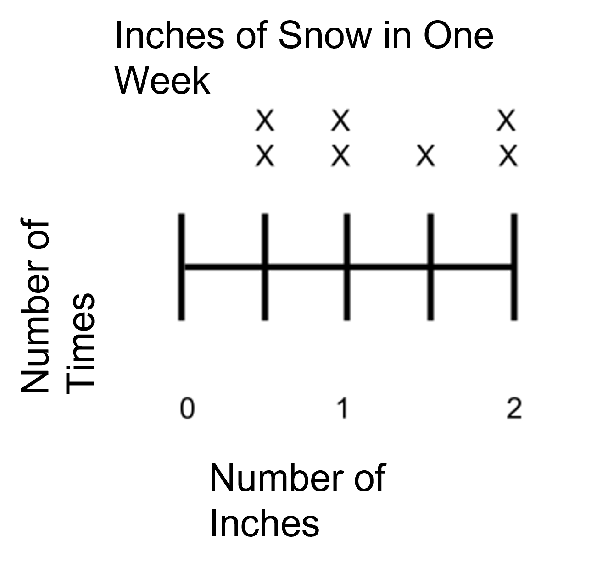

What You Should Know - Sphero: Germs Everywhere
 Important Vocabulary
Important Vocabulary
- Conditionals - computer commands, commonly known as if/then statements, that only run if certain conditions have been met (example: IF BOLT sees another robot, THEN BOLT spins in a circle)
- Disease- a change in a living thing that prevents it from functioning normally
- Epidemiology- a branch of medicine that deals with the study of diseases that affect a lot of people at the same time in one place
- Epidemiologist- a doctor who focuses on the diseases that spread between people
- Infrared Communication- a form of wireless communication that uses light waves with longer wavelengths that are invisible to the human eye
- Robot- a type of machine that is programmed to complete tasks without the help of a person
- Line Plot - a model showing frequency using a number line
- Fraction - a way of representing part of a whole
What Is a Robot?
Robots are a type of machine. A machine makes work easier by using a source of energy. A robot is a type of machine, but not all machines are robots.
You have learned that Sphero is a ball-shaped robot. Sphero BOLT has no outside moving parts as all its electrical and mechanical parts are inside its hard outer shell. Sphero is equipped with special lights and sensors. You program Sphero to respond to your coding commands.
Coding and Programming
Programming is the process of writing specific instructions for a machine to use to complete tasks. When those specific instructions are written for machines to follow, it communicates with the machine. Coding is the language of programs. There are hundreds of different coding languages. You will use block coding for this activity.
Coding With Blocks
One way to program Sphero BOLT is with blocks instead of symbols, numbers, and letters. Each block represents a line of code. These blocks of code snap together like a line of puzzle pieces. By connecting blocks of code, you create a computer program. There are different kinds of blocks. Each type comes in a different color.
Understanding Control Blocks
The control tab is where the conditional blocks are located. These blocks are color-coded purple. Conditionals are actions that will take place when certain coding conditions or requirements are met.
An example of a conditional is the loop forever block, which you will use throughout the activity.
For more information on conditionals, you can watch this video:
Coding: Conditionals - Coding for Kids - Computer Programming Terms
Infrared Communications
Infrared communication is also known as IR communication, and you use it in your daily life when you use tools such as computers and remote controls.
Infrared (IR) light is similar to the light that is visible to the human eye. However, it has longer wavelengths. This means that infrared light is invisible to the human eye. IR light is excellent for transporting messages. In this activity, when messages are sent between BOLT devices, this is called an event. The IR events will only happen if the code associated with the event meets the conditions.
For more information on Infrared communication, you can watch this video:
What Is a Line Plot?
A line plot is a type of model that is used to record how frequently something happens. Each event is recorded using an X above the corresponding number. A line plot is useful for seeing where the data is grouped, the spread between the largest and smallest values, and which values occurred most often.

A line plot should always include a title and the units for the number line. The number line can include whole numbers and fractions. This line plot shows the amount of snowfall over the course of a week. Each day is represented by an X. There were two days with inches of snow, two days with 1 inch of snow, 1 day with inches, and two days with 2 inches of snow. We can use the data from a line plot to figure out additional information. In this case, we can add the values together to find out how much snow fell over the course of the week. We could also use this data to calculate the average snowfall over the course of the week.
Career Connection and Real-World Application
Epidemiology
Epidemiology is a branch of medicine that studies infectious diseases that affect people. The study of diseases includes their origins, spread, risk factors, and possible medicines to help fight the disease.
Epidemiologists are scientists who study infectious diseases. They work both with patients and in laboratories to identify diseases. They look for how far a disease outbreak has spread and try to find the source. They also work with other scientists to find treatments to prevent more outbreaks. An example of a widespread disease that affected many people is the flu pandemic of 1918. This virus is also known as H1N1. It was caused by the rapidly spreading flu virus that reached people all over the world. Many people became sick and died.
Two ways that diseases can spread are through the air and by touching someone infected; the method of spreading depends on the specific disease.
In 1918, few epidemiologists understood how to protect people from the dangers of this infection. Epidemiology is important because it helps scientists and others learn more about diseases and methods of controlling them. When diseases are understood, curing people and saving lives become easier.
Cyber Security

The work in Cyber Security is similar to epidemiology, but for technology rather than people.
Security for our devices is important. Most bugs or viruses that infect devices are codes written by people who want to steal data. People write computer viruses to attack government agencies or companies to gather information like your name, address, or even your financial information. One way that a “virus” spreads is by e-mails and social media. When an e-mail or posting is shared, the computer virus spreads the same way infectious diseases spread. If you share an infected post or message with 4 friends, and each of those friends shares it with 4 of their friends, the virus will spread to 4x4, or 16 people. Table A shows what would happen if each group of 4 friends shares the infected post or message with 4 more friends.
Table A
| Written Form | Mathematical Expression | Total of Infected Computers |
| One infected email sent to 4 friends | 4 | 4 |
| Those 4 friends each send it to 4 more friends | 16 | |
| 64 | ||
| 256 | ||
| 1024 |
Many programs find and isolate “bugs” on our devices. Cyber Security works on a large scale. These are specialists that work to prevent “bugs” from infecting software, computers, systems, and networks. These bugs can cause a system to fail, get captured, or steal personal information. Cybersecurity builds programs to prevent the bugs from invading.